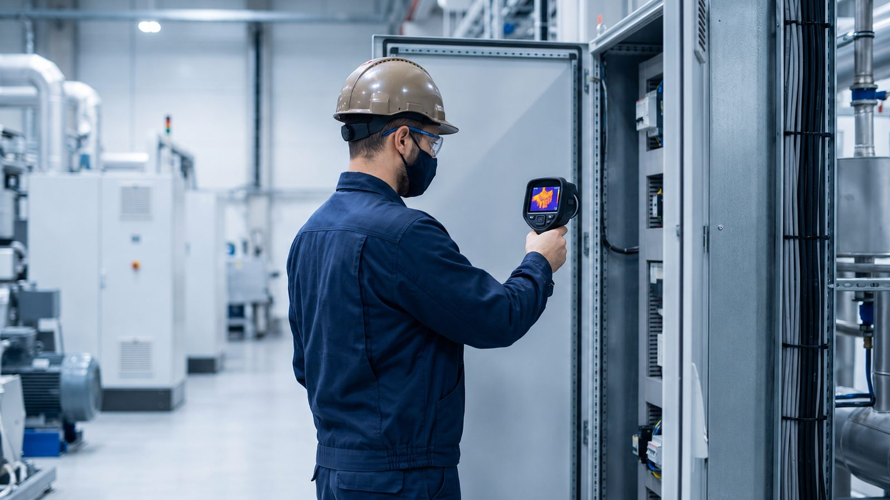
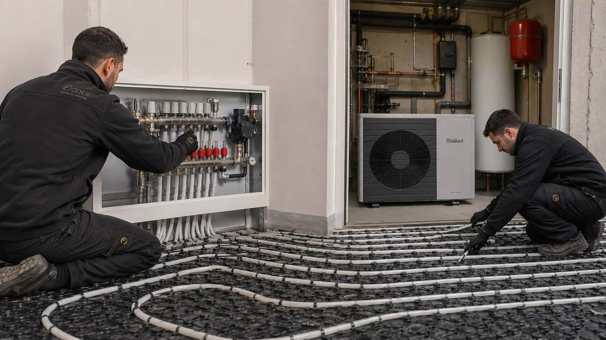
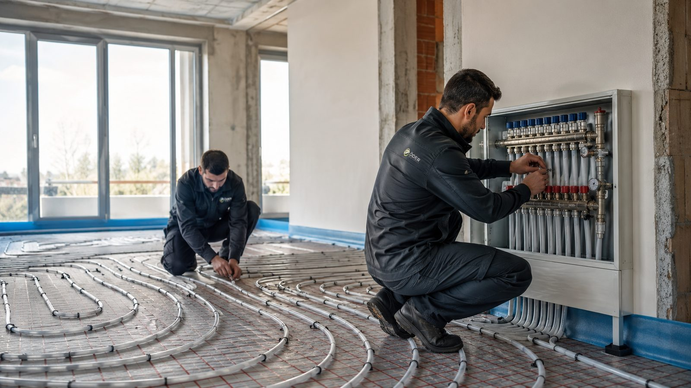
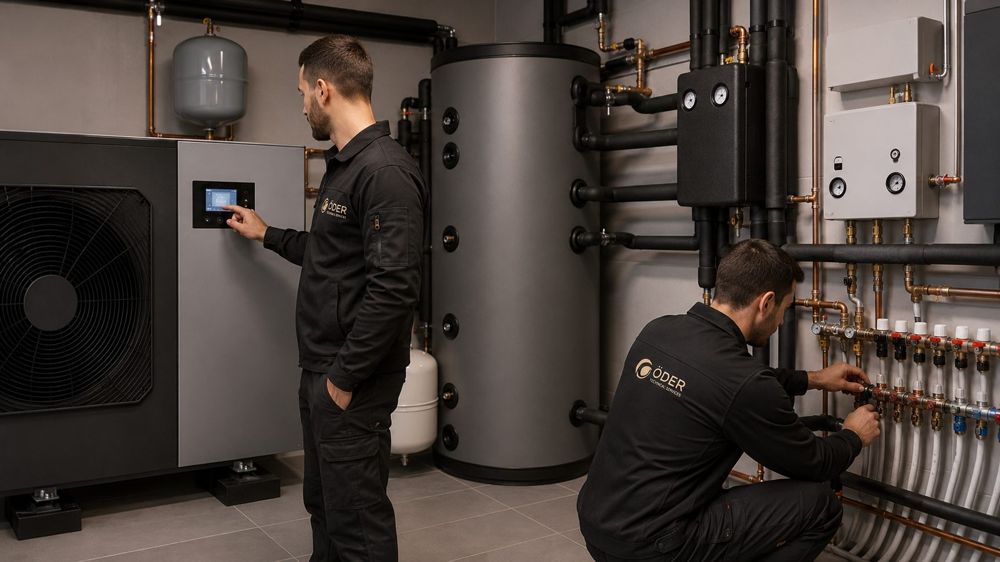
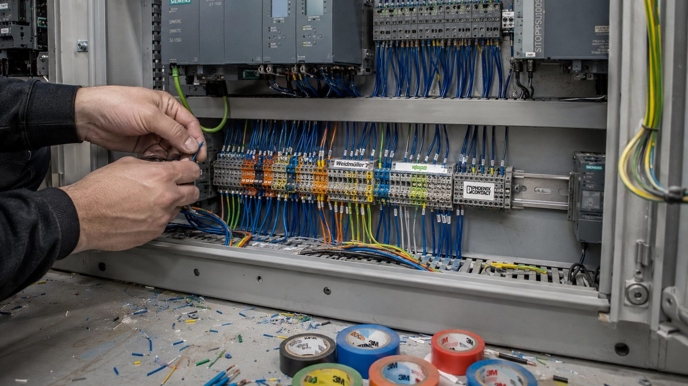
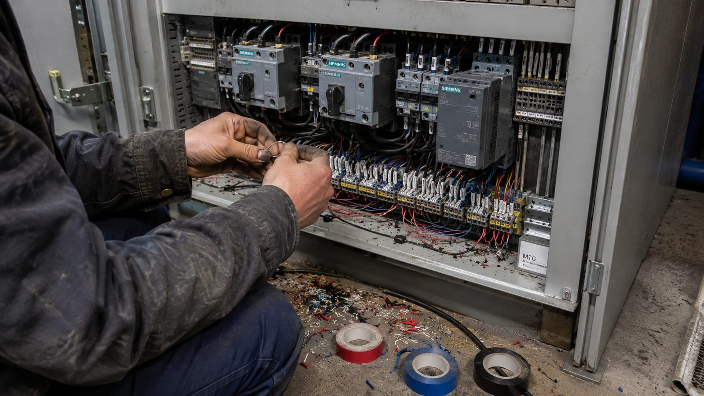
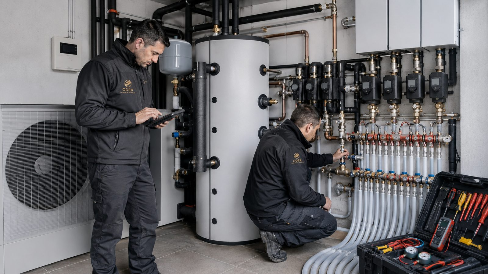
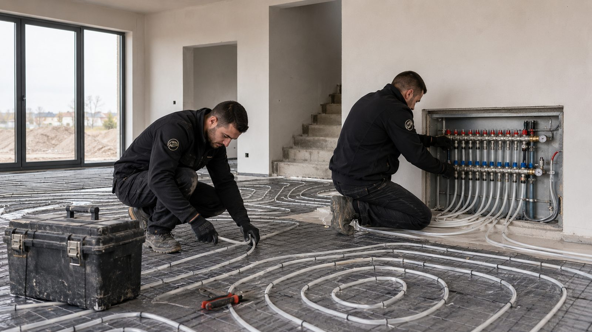
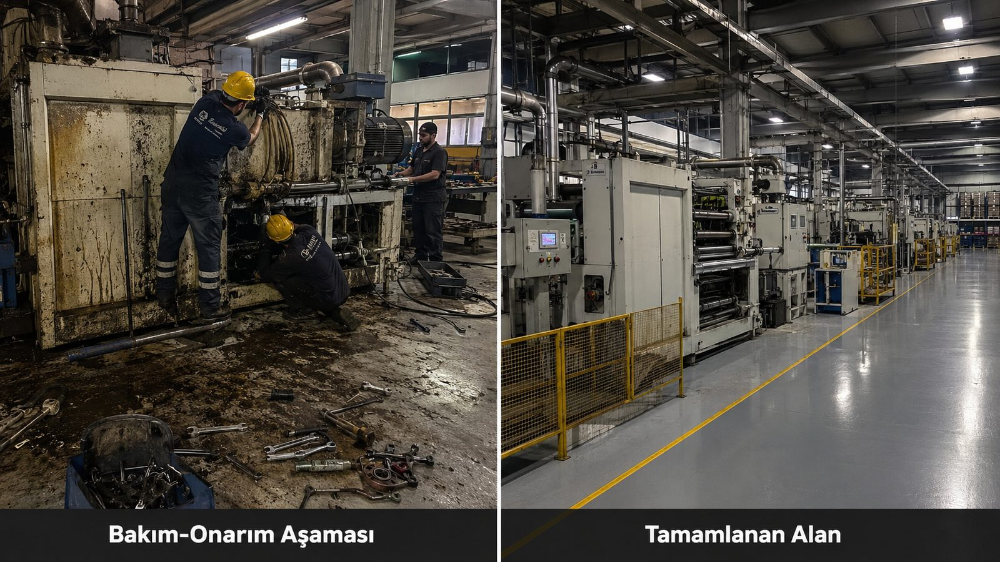
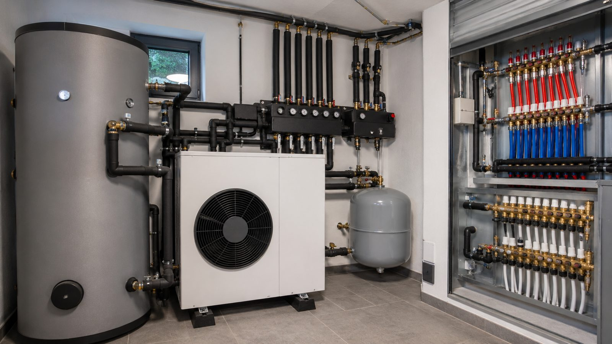

AVM, hastane, iş merkezi, zincir mağaza ve fabrikalarda periyodik bakım sözleşmesi, arıza müdahalesi, inşai onarım ve elektrik taahhüt. Kapsamı kalem kalem yazarız.
Bir AVM ile bir hastanenin teknik işletmesi aynı işin iki farklı adı değildir. Çalışma penceresi, izin süreci, risk kalemleri ve kesinti toleransı birbirinden ayrıdır; sözleşme de buna göre kurulur.
Çalışma penceresi kepenk kapandıktan sonra başlar. Toz bariyeri, gürültü sınırı, AVM yönetimi çalışma izni, yük asansörü rezervasyonu ve personel giriş kartları takip edilmesi gereken kalemlerdir. Ortak alan aydınlatması, iklimlendirme, yangın algılama ve yürüyen merdiven periyodik bakımı ile mağaza içi inşai onarım aynı sözleşme altında toplanabilir.
Hasta ve personel sirkülasyonu kesilmeden, hijyen bariyerli ve etaplı çalışma esastır. Elektrik, su ve tıbbi gaz hatlarının kesintisizliği; basınçlı kap, asansör ve jeneratör kontrolleri; acil çıkışların işlevselliği teknik işletmenin ayrı başlıklarıdır. Enfeksiyon kontrol kurallarına uyum sözleşmeye yazılır.
Kat kat ilerleyen program, mesai dışı imalat ve çalışan konforunu bozmayan geçiş planı. İklimlendirme, aydınlatma, UPS ve jeneratör periyodik bakımı; veri merkezi ve sistem odası bulunan binalarda soğutma sürekliliği ayrı bir risk kalemidir.
Üretim takvimi belirleyicidir; bakım planlı duruşlara göre kurgulanır. Trafo ve orta gerilim hücreleri, kompanzasyon, pano termal kontrolü, kompresör ve basınçlı hava hattı, PLC-SCADA sistemleri. Plansız duruşun maliyeti bakım sözleşmesinin kendisinden büyüktür.
Teknik hizmet firmaları arasındaki fark fiyat listesinde değil, sözleşmenin ayrıntısında görünür. Aşağıdaki sekiz başlık net yazılmamışsa, yıl içinde mutlaka tartışma çıkar. Bu listeyi bizimle çalışmasanız bile kullanın.
"Tüm elektrik ve mekanik sistemlerin bakımı" cümlesi hiçbir şey anlatmaz. İyi bir sözleşmede ekipman envanteri vardır: kaç adet asansör, hangi marka jeneratör, kaç pano, hangi klima santrali. Envanter yoksa bakım sayısı ve fiyat da gerçekçi değildir.
Koruyucu bakım takvime bağlı, planlı bir mühendislik hizmetidir; üretici servis el kitabındaki kontrol listelerine göre yapılır. Arıza müdahalesi ise çağrı üzerinedir. İkisi tek kalemde toplanmışsa, yıl içinde hangi işin sözleşmeye dahil olduğu tartışma konusu olur.
Sektörde en çok anlaşmazlık çıkaran kalem budur. Sözleşmede sarf malzeme (filtre, kayış, yağ) ile yedek parçanın (kompresör, kart, motor) ayrı ayrı tanımlanması gerekir. Hangi tutara kadar yüklenicinin, hangi tutardan sonra işverenin olduğu yazılmalıdır.
Tek bir "en kısa sürede" ifadesi yeterli değildir. Arızalar kritikliğine göre ayrılır: üretimi veya tesisi durduran arıza, konforu etkileyen arıza, planlanabilir iş. Her kademe için ayrı müdahale ve çözüm süresi yazılır. Sürelere bağlı cezai şart varsa iki taraf için de olmalıdır.
Yerinde sürekli personel mi (in-house ekip), yoksa çağrı üzerine gelen mobil ekip mi? Sürekli personel varsa kaç kişi, hangi vardiya, hangi yetkinlik belgeleriyle. Yetkili elektrikçi, yüksek gerilim işletme sorumlusu ve İSG belgeleri kontrol edilmelidir.
Her bakımın kayda geçmesi, bir sonraki yılın planını oluşturur. Aylık rapor; yapılan bakımlar, açılan ve kapanan arıza çağrıları, tekrarlayan arızalar ve önerilen yatırımları içermelidir. Ölçüm raporları (termal, topraklama, güç kalitesi) önceki ölçümle karşılaştırmalı verilmelidir.
Asansör, yangın sistemi ve bazı özel ekipmanlarda yetkili servis zorunluluğu olabilir. Bu normaldir; sorun, koordinasyon yükünün kime kaldığıdır. İşvereni alt yüklenicilerle tek tek muhatap bırakan bir sözleşme, aslında bakım sözleşmesi değildir.
Sözleşme bittiğinde ekipman geçmişi, program yedekleri, anahtarlar, şifreler ve dokümantasyon işverene teslim edilmelidir. Bunlar yazılı değilse, firma değiştirirken tesisin geçmişi kaybolur ve yeni yüklenici sıfırdan başlar.
Kamu tarafında bu başlıkların karşılığı idari ve teknik şartnamededir; 4734 sayılı Kamu İhale Kanunu kapsamındaki hizmet alımlarında kapsam, benzer iş tanımı ve yeterlik kriterleri şartnamede belirlenir. Özel sektörde ise aynı ayrıntı sözleşmeye yazılmadığı sürece bağlayıcı değildir.
Görsele tıklayarak büyütebilirsiniz.










Yaygın uygulama bir yıldır; işletme bütçeleri yıllık kurulduğu için böyledir. Daha uzun süreli sözleşmelerde fiyat güncelleme formülünün baştan yazılması gerekir. Süreyi görmeden söylemiyoruz; keşif sonrası tesise uygun süreyi teklifte belirtiyoruz.
Evet. Yalnız elektrik tarafı, yalnız trafo ve pano, ya da yalnız inşai onarım kapsamında sözleşme yapılabilir. Kapsamın dar olması sorun değil; tanımsız olması sorundur.
Devir aşamasında ekipman envanteri çıkarılır, mevcut bakım kayıtları ve ölçüm raporları incelenir, açık arıza listesi devralınır. Bu tespit yapılmadan verilen fiyat gerçekçi olmaz; biz keşif yapmadan teklif vermiyoruz.
Merkez ofisimiz Ataşehir / İstanbul'dadır; projeler Türkiye genelinde yürütülmektedir. Sürekli personel gerektiren sözleşmelerde mesafe ve ulaşım planı teklifte ayrıca değerlendirilir.
Saha keşfi. Ekipman envanteri, pano ve trafo durumu, mevcut arıza listesi ve çalışma kısıtları yerinde görülmeden kapsam yazılamaz. Keşif ve teklif ücretsizdir; teklifte hangi sistemin hangi sıklıkla bakıma gireceği kalem kalem yazar.
Evet. Kurucumuz 4734 sayılı Kamu İhale Kanunu ve 4735 sayılı Kamu İhale Sözleşmeleri Kanunu konusunda eğitmenlik yapmıştır (AMP Yazılım, 2010–2013). İdari ve teknik şartname okuma, birim fiyat analizi ve teklif hazırlama süreçleri bizim için standart iştir.
Keşif ve teklif ücretsizdir. 24 saat içinde dönüş yapıyoruz.